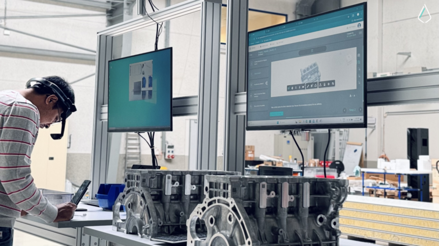

Blog - Explorando el Diseño Industrial

Integración de Tecnología en el Diseño
La tecnología juega un papel crucial en la evolución del diseño industrial. Este artículo analiza herramientas como realidad aumentada, modelado 3D y su impacto en la innovación de[...]
Ver más

El Futuro de la Fabricación Digital
Con impresión 3D, corte láser y técnicas avanzadas, la fabricación digital redefine el diseño industrial. Exploramos casos reales y proyecciones a futuro.
Ver más